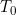

Pogled kamere T0
- Ravnina zadana je s točkom  i dva nekolinearna vektora i .
- Za svaku točku , vektori , i su komplanarni.
- Stoga postoje takvi da je
- Kako je , konačno se dobiva vektorski oblik jednadžbe ravnine :
- Radijvektori i općenito ne leže u ravnini , osim u slučaju kada ravnina prolazi kroz ishodište koordinatnog sustava.
- Parametri i su koordinate točke s obzirom na koordinatni sustav u ravnini pri čemu je baza za .
- Lijeva tipka miša - rotiranje kamere oko 3D scene
- Srednja tipka miša - približavanje i udaljavanje od objekta
- Pritiskom na tipku
O na tastaturi stavlja se pogled kamere prema ishodištu koordinatnog sustava.
- Pritiskom na tipku
T na tastaturi stavlja se pogled kamere prema točki T0 .